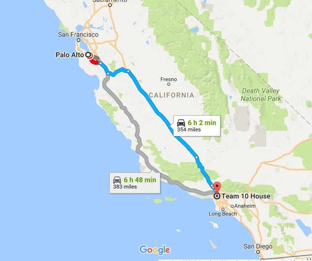
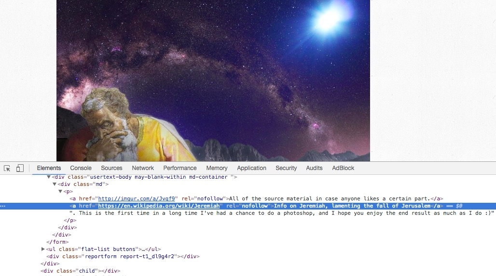

This project "Bromethius Rising" is a gesture that aims to contextualizing meaning in mass representation. I am interested in using data mining methodologies in order to to explore big data as the sutff of our information economy. This research walks through exploring cultural meaning with networked technologies. In this gesture I will be using Beautiful Soup a Python library to scrape multiple websites collecting qualitative research to build a corpus of cultural meaning.
In the summer of 2017 Jake Paul, musician, actor and youtuber drops a track "It's Every Day Bro". His song is connected to a number of transmedial scandals that have gathered much spectacular attention that raises the value of image production equating it to physical value. Visuality and the looking raises the value of an image. I am using the term spectacle in the regard that the image operates as an affective operation that proves its thingness as well as actively grasps for audiences attention. His crew "team 10" are known for producing content which is made extremely fast, in the case of this song was produced in an afternoon. Editing is very limited and production is a fast turn around. This is a similar production method to silicon valley's methodologies of "move fast and break things" -Zuckerburg. The address of Team 10's site of production surfaced after became visible in team 10's content. Many fans visit their house as they would a Hollywood film studio or celebrities house. 638 N Kilkea Dr, West Hollywood, Calafornia is only 6hr 2min to 6hr 48min drive depending on which route you take to the heart of Silicon Vallery Palo Alto.

Team 10 is an interesting example which for me solidifies a current paradigm of branded content production in mass representation. This Team parallels to media production industries, like a microcosm of hollywood or Disney which Jake Paul has previously worked for on a show called "Bizaardvark". A difference between these modes of production is that Team 10 any many other image labourer's of Youtube or Instagram short circuit the large distribution platforms into a self-produced pro amateur platform. In this mode these content producers work to represent their identities as brands, or put differently as televisual affective images, producing value. The value comes in the form of ads revenue, sponrships, transmedial products where the digital image crosses into the physical world and circulates in consumer distribution. This visuality is a sort of labour which transforms previous modes of how value and meaning are created.
This visual economy is linked to cloud technologies whose infrastructure produces subjects in symbiotic ways. The cinematic production, transmission and curation of indexical content is distributed, stored and circulates in cloud technologies like data centres and exchanges. Much of these database designs are built ontop of engineering practices whose representation methods organize databases, as objective knowledge. This design has its short comings as we currently have a limited understanding about consciousness, quality and meaning, making the mass representation of indexical knowledge that are built into these the networked technologies built on grey zones and misconceptions. This visualization and representation of information operates, structuring audience's methods forming knowledge, perception and can bleed into self-fufilling realities. These modes of mass spectacular production alienate audiences from meaning, objects and communities. This alienation via labour comes from industrialized and modernist production.
Big data, data science, information sciences and artificial intelligence are more then just buzz words, but are accelerating feilds symptomatic of this network technology.
I am interested in using methodologies of this design in order to examine cultural meaning creation and dissemination in our visual economy.
The tools I have used are Python and BeautifulSoup to make a data mining tool that scraps multiple websites compiling qualitative research into Jake Paul's "Its Everyday Bro". See link to source code. In my this research I am building a corpus of meaning around the word "bro". I am particularly interested in how meaning mutates and morphs beyond recognition in mass circulation.
You can explore the Corpus of American English to see one example of text corpi. Additionally you can explore semantic knowledge analysis with Sematch.
In using these technologies you can target specific words and how they circulate amongst networks. For example pinpointing the text layered in the markup tree of this reddit photoshop battle webpage of Jeremiah lamenting the fall of Jerusalem.

I have found Crummy's site particularly helpful "navigating the tree".
In my python code I use the get_text method soup.get_text('bro') to gather more then just plain text but the markup unicode (which include language of emojis). This markup fusion with plain text produces interesting results that blend the material of new media with the results of this gesture. This synthesizes the form and content with the ideology of "The Every Day Bro" becoming a floating signification of identity mediated by networked technology. The term "bro" can be used and suffix/prefix, as pun or other play on words signifing an empty representation of identification. This visuality can hardly take itself serious and collapses all meaning in the morphogenic nature of mass represented exporuse whose methods tend to liquify subjects.
Much of this project falls into the catagory of explicit text mining whose role is the process or practice of examining large collections of written resources in order to generate new information. The goal of text mining is to discover relevant information in text by transforming the text into data that can be used for further analysis.
Natural language processing (or NLP) is a form of text mining that performs a special kind of linguistic analysis that essentially helps a machine “read” text. NLP uses a variety of methodologies to decipher the ambiguities in human language, including the following: automatic summarization, part-of-speech tagging, disambiguation, entity extraction and relations extraction, as well as disambiguation and natural language understanding and recognition.
Today, NLP software is a “shadow” process running in the background of many common applications such as the personal assistant features in smartphones, translation software and in self-service phone banking applications.
Text mining and NLP are commonly used together for different purposes, and one of most common applications is social media monitoring, where an analysis is performed on a pool of user-generated content to understand mood, emotions and awareness related to a topic.
 In this explicit text mining I am removing the original context and using it in the framing of this Jake Paul's branded font updating the everyday banalaty in which the signifier does not sign a single thing. I am speculating whether this is entropy operating- liquidatation in mass pseudo-ironic mashups or is a sympotom of image labour move audience past a single unified meaning into a constantly shifting relational collection of ideas looses associated with each other.
I have found methods in organizing big data influencial in producing qualitative research around network culture. Sepcifically the "Natural" in Natural Language Processing that interprets speech and text as humans naturally speak and type. The way in which we communicate and represent ourselves are layered, complicated with colloquialisms, abbreviations, platform specific (unicode emoticons) and non-verbal forms of communication. The rhizomatic nature of this design is interesting to me in terms of how communinities share ideas and relate to each other. Cloud thinking is linked to Cloud technologies as a mode of thinking with multiplicite sources of objective and sometime contractiding truths as fueled by personalization and curation of feeds which facillitates in seeing one biases in searching databases. This algorythymic sorting locks ones access of information into homeginized pathways that move further and further from the interpersonal skills and relational knowledge of being exposed to difference.
In this explicit text mining I am removing the original context and using it in the framing of this Jake Paul's branded font updating the everyday banalaty in which the signifier does not sign a single thing. I am speculating whether this is entropy operating- liquidatation in mass pseudo-ironic mashups or is a sympotom of image labour move audience past a single unified meaning into a constantly shifting relational collection of ideas looses associated with each other.
I have found methods in organizing big data influencial in producing qualitative research around network culture. Sepcifically the "Natural" in Natural Language Processing that interprets speech and text as humans naturally speak and type. The way in which we communicate and represent ourselves are layered, complicated with colloquialisms, abbreviations, platform specific (unicode emoticons) and non-verbal forms of communication. The rhizomatic nature of this design is interesting to me in terms of how communinities share ideas and relate to each other. Cloud thinking is linked to Cloud technologies as a mode of thinking with multiplicite sources of objective and sometime contractiding truths as fueled by personalization and curation of feeds which facillitates in seeing one biases in searching databases. This algorythymic sorting locks ones access of information into homeginized pathways that move further and further from the interpersonal skills and relational knowledge of being exposed to difference.
 We can thank Jake Paul, Team 10 and many other image labourers who agendas seem to be parrallel to avantgarde tactics from modern politcal and art movements trying to liberate meaning from langauge. Such as Dada's collage, Burrough's Cut-up technique and the montage. The visual economy fufils or presupposes the prophecy that life imitates art.
The free floating signifier of identity in personal branding operates like Warhols Campbell soup shows how the image is abstracted from the labour practice and communities behind producing such objects. Presupposing the organization of value of images over material production- where there is a higher order of commodity - the remediation self. The role of the artist has been to design images and reorganize viewing to produce value. In this way Jake Paul and the dynamics of mass representation plays similar roles to painters of the past who know that structuring images and obtaining looking produces value.
In the box below I am presenting the "bro" corpus in a generative algorithym titled "Bromethius Rising". This algorithym reframes Jake Paul's branded content. Here you can watch the dialectical relationship as it tests this signifier against Jake Paul's branding- speculating what appropriate context looks like with the "bro" signifier.
We can thank Jake Paul, Team 10 and many other image labourers who agendas seem to be parrallel to avantgarde tactics from modern politcal and art movements trying to liberate meaning from langauge. Such as Dada's collage, Burrough's Cut-up technique and the montage. The visual economy fufils or presupposes the prophecy that life imitates art.
The free floating signifier of identity in personal branding operates like Warhols Campbell soup shows how the image is abstracted from the labour practice and communities behind producing such objects. Presupposing the organization of value of images over material production- where there is a higher order of commodity - the remediation self. The role of the artist has been to design images and reorganize viewing to produce value. In this way Jake Paul and the dynamics of mass representation plays similar roles to painters of the past who know that structuring images and obtaining looking produces value.
In the box below I am presenting the "bro" corpus in a generative algorithym titled "Bromethius Rising". This algorithym reframes Jake Paul's branded content. Here you can watch the dialectical relationship as it tests this signifier against Jake Paul's branding- speculating what appropriate context looks like with the "bro" signifier.
its everyday bro